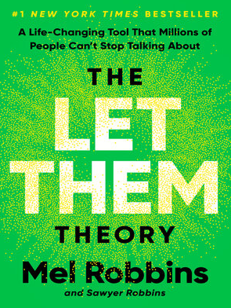
What if the key to happiness, success, and love was as simple as two words?If you’ve ever felt stuck, overwhelmed, or frustrated with where you are, the problem isn’t you. The problem is the power you give to other people. Two simple words–Let Them–will set you free. Free from the opinions, drama, and judgments of others. Free from the exhausting cycle of trying to manage everything and everyone around you. The Let Them Theory puts the power to create a life you love back in your hands–and this book will show you exactly how to do it.In her latest groundbreaking book, The Let Them Theory, Mel Robbins–New York Times bestselling author and one of the world’s most respected experts on motivation, confidence, and mindset–teaches you how to stop wasting energy on what you can’t control and start focusing on what truly YOU. Your happiness. Your goals. Your life.Using the same no-nonsense, science-backed approach that’s made The Mel Robbins Podcast a global sensation, Robbins explains why The Let Them Theory is already loved by millions and how you can apply it in eight key areas of your life to make the biggest impact. Within a few pages, you’ll realize how much energy and time you’ve been wasting trying to control the wrong things–at work, in relationships, and in pursuing your goals–and how this is keeping you from the happiness and success you deserve.Written as an easy-to-understand guide, Robbins shares relatable stories from her own life, highlights key takeaways, relevant research and introduces you to world-renowned experts in psychology, neuroscience, relationships, happiness, and ancient wisdom who champion The Let Them Theory every step of the way.Learn how Stop wasting energy on things you can’t control Stop comparing yourself to other peopleBreak free from fear and self-doubtRelease the grip of people’s expectationsBuild the best friendships of your lifeCreate the love you deservePursue what truly matters to you with confidenceBuild resilience against everyday stressors and distractionsDefine your own path to success, joy, and fulfillment. . . and so much more.The Let Them Theory will forever change the way you think about relationships, control, and personal power. Whether you want to advance your career, motivate others to change, take creative risks, find deeper connections, build better habits, start a new chapter, or simply create more happiness in your life and relationships, this book gives you the mindset and tools to unlock your full potential.Order your copy of The Let Them Theory now and discover how much power you truly have. It all begins with two simple words.
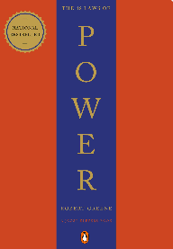
Amoral, cunning, ruthless, and instructive, this multi-million-copy New York Times bestseller is the definitive manual for anyone interested in gaining, observing, or defending against ultimate control – from the author of The Laws of Human Nature.In the book that People magazine proclaimed “beguiling” and “fascinating,” Robert Greene and Joost Elffers have distilled three thousand years of the history of power into 48 essential laws by drawing from the philosophies of Machiavelli, Sun Tzu, and Carl Von Clausewitz and also from the lives of figures ranging from Henry Kissinger to P.T. Barnum. Some laws teach the need for prudence (“Law 1: Never Outshine the Master”), others teach the value of confidence (“Law 28: Enter Action with Boldness”), and many recommend absolute self-preservation (“Law 15: Crush Your Enemy Totally”). Every law, though, has one thing in common: an interest in total domination. In a bold and arresting two-color package, The 48 Laws of Power is ideal whether your aim is conquest, self-defense, or simply to understand the rules of the game.
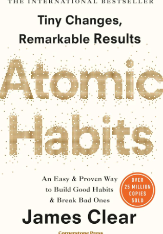
No matter your goals, Atomic Habits offers a proven framework for improving–every day. James Clear, one of the world’s leading experts on habit formation, reveals practical strategies that will teach you exactly how to form good habits, break bad ones, and master the tiny behaviors that lead to remarkable results. If you’re having trouble changing your habits, the problem isn’t you. The problem is your system. Bad habits repeat themselves again and again not because you don’t want to change, but because you have the wrong system for change. You do not rise to the level of your goals. You fall to the level of your systems. Here, you’ll get a proven system that can take you to new heights. Clear is known for his ability to distill complex topics into simple behaviors that can be easily applied to daily life and work. Here, he draws on the most proven ideas from biology, psychology, and neuroscience to create an easy-to-understand guide for making good habits inevitable and bad habits impossible. Along the way, readers will be inspired and entertained with true stories from Olympic gold medalists, award-winning artists, business leaders, life-saving physicians, and star comedians who have used the science of small habits to master their craft and vault to the top of their field. Learn how to: * make time for new habits (even when life gets crazy); * overcome a lack of motivation and willpower; * design your environment to make success easier; * get back on track when you fall off course; …and much more. Atomic Habits will reshape the way you think about progress and success, and give you the tools and strategies you need to transform your habits–whether you are a team looking to win a championship, an organization hoping to redefine an industry, or simply an individual who wishes to quit smoking, lose weight, reduce stress, or achieve any other goal.

*Who Moved My Cheese?* is a short, engaging parable about change and adaptation. Through the story of four characters searching for “Cheese” in a maze, the book uses simple metaphors to represent our goals in life and the environments where we pursue them. Easy to read yet deeply insightful, it offers timeless lessons on dealing with change, reducing stress, and finding success in both work and life.
New York Times Best SellerOver 5 million copies soldFor David Goggins, childhood was a nightmare — poverty, prejudice, and physical abuse colored his days and haunted his nights. But through self-discipline, mental toughness, and hard work, Goggins transformed himself from a depressed, overweight young man with no future into a U.S. Armed Forces icon and one of the world’s top endurance athletes. The only man in history to complete elite training as a Navy SEAL, Army Ranger, and Air Force Tactical Air Controller, he went on to set records in numerous endurance events, inspiring Outside magazine to name him and “The Fittest (Real) Man in America. and “In Can’t Hurt Me, he shares his astonishing life story and reveals that most of us tap into only 40% of our capabilities. Goggins calls this The 40% Rule, and his story illuminates a path that anyone can follow to push past pain, demolish fear, and reach their full potential.
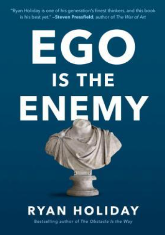
“While the history books are filled with tales of obsessive, visionary geniuses who remade the world in their image with sheer, almost irrational force, I’ve found that history is also made by individuals who fought their egos at every turn, who eschewed the spotlight, and who put their higher goals above their desire for recognition.” – from the Prologue Many of us insist the main impediment to a full, successful life is the outside world. In fact, the most common enemy lies within: our ego. Early in our careers, it impedes learning and the cultivation of talent. With success, it can blind us to our faults and sow future problems. In failure, it magnifies each blow and makes recovery more difficult. At every stage, ego holds us back. The Ego is the Enemy draws on a vast array of stories and examples, from literature to philosophy to history. We meet fascinating figures like Howard Hughes, Katharine Graham, Bill Belichick, and Eleanor Roosevelt, all of whom reached the highest levels of power and success by conquering their own egos. Their strategies and tactics can be ours as well. But why should we bother fighting ego in an era that glorifies social media, reality TV, and other forms of shameless self-promotion? Armed with the lessons in this book, as Holiday writes, “you will be less invested in the story you tell about your own specialness, and as a result, you will be liberated to accomplish the world-changing work you’ve set out to achieve.”
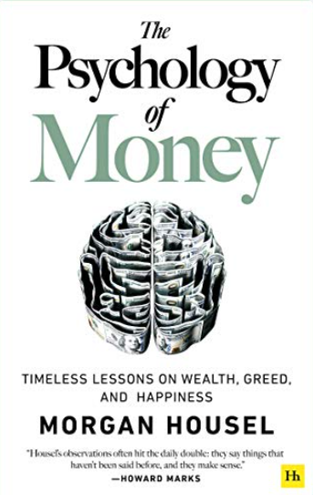
Doing well with money isn’t necessarily about what you know. It’s about how you behave. And behavior is hard to teach, even to really smart people. Money–investing, personal finance, and business decisions–is typically taught as a math-based field, where data and formulas tell us exactly what to do. But in the real world people don’t make financial decisions on a spreadsheet. They make them at the dinner table, or in a meeting room, where personal history, your own unique view of the world, ego, pride, marketing, and odd incentives are scrambled together. In The Psychology of Money, award-winning author Morgan Housel shares 19 short stories exploring the strange ways people think about money and teaches you how to make better sense of one of life’s most important topics.
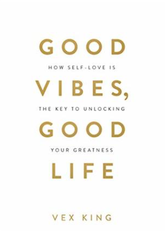
Vex King is leading a revolution for the next generation of spiritual seekers. An online inspiration to hundreds of thousands of people, Vex is a role model for young people seeking a new way of living. Vex beat all the odds of an incredibly difficult childhood – his family were often homeless and he suffered racist abuse in a violent neighbourhood. Despite these challenges, Vex went on to complete university and thrive in his career. His work brought him into contact with people who started asking him for life advice and Vex began sharing his ideas through social media. His positive and encouraging posts very quickly began to attract a highly engaged following who related to his messages and looked to Vex for guidance. This book is a collection of Vex’s most popular wisdom. It is a guide to transforming negative emotions to positive ones, developing self-love, mind mastery, and goal setting, and finding a deeper purpose in life. On social media, Vex is asked the same questions over and over again. This book is the answer to these key questions which Vex has collected over the years- – How have you become so positive and happy, especially after such a devastating upbringing – and how can I do the same? – How do I transform negative emotions into positive ones? – How can I truly love myself, and what does it mean? – How should I handle negative people, especially my loved ones? – Why aren’t my goals manifesting? – Why doesn’t life always go to plan? – What is my purpose in life and how do I find it? – What is the true meaning of happiness? Good Vibes, Good Life shares deep spiritual knowledge in a way that’s easy to understand, while providing practical solutions. Down-to-earth and relatable, this book is for those seeking a way out of darkness and the tools to build a new life. Author BiographyVex King is a young British Indian social influencer, mind coach, writer, and lifestyle entrepreneur. He is the owner of the Bon Vita lifestyle brand, which
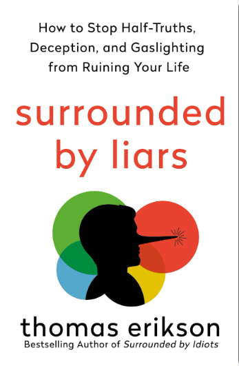
Protect yourself against lies and deception with bestselling author Thomas Erikson’s proven behavioral science methods Do you ever have the feeling that your friend isn’t telling you the whole story? Or that your colleague’s answer doesn’t quite add up? Whether in your personal or social life, professional life, or on the news or media, sorting the lies from the truth can be exhausting and make you feel constantly on edge. In the latest installment of the Surrounded by Idiots series, Thomas Erikson shows you how to identify and deal with the liars in your life. With the help of the simple, four-color behavioral model made famous in Surrounded by Idiots, readers will learn to protect themselves against deception and insincerity. Filled with sophisticated wisdom and Erikson’s trademark humor, SURROUNDED BY LIARS arms readers with the practical knowledge needed to feel confident in their ability to discern the truth and live a calmer, more reliable life.
From the #1 New York Times-bestselling author of The 48 Laws of Power comes the definitive new book on decoding the behavior of the people around you Robert Greene is a master guide for millions of readers, distilling ancient wisdom and philosophy into essential texts for seekers of power, understanding and mastery. Now he turns to the most important subject of all – understanding people’s drives and motivations, even when they are unconscious of them themselves. We are social animals. Our very lives depend on our relationships with people. Knowing why people do what they do is the most important tool we can possess, without which our other talents can only take us so far. Drawing from the ideas and examples of Pericles, Queen Elizabeth I, Martin Luther King Jr, and many others, Greene teaches us how to detach ourselves from our own emotions and master self-control, how to develop the empathy that leads to insight, how to look behind people’s masks, and how to resist conformity to develop your singular sense of purpose. Whether at work, in relationships, or in shaping the world around you, The Laws of Human Nature offers brilliant tactics for success, self-improvement, and self-defense.
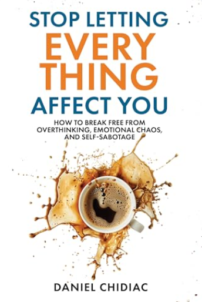
STOP LETTING EVERYTHING AFFECT YOU is a transformative guide for anyone who overthinks too often, gets stuck in emotional chaos, and finds themselves trapped in cycles of self-sabotage. With raw honesty and practical wisdom, Daniel Chidiac reveals why small things ruin your entire day and offers proven strategies to finally break free.This book will teach you how Stop letting little things ruin your entire day.Stop self-sabotaging.Set healthy boundaries without feeling guilty.Recognize the difference between real guilt and manipulation.Break the cycle of overthinking before it spirals out of control.Stop taking everything so personally and free yourself from emotional reactivity.Identify toxic patterns in relationships and walk away without regret.Be more in control and feel better everyday.Shift your mindset from victimhood to self-empowerment.Learn the art of emotional detachment–how to be unbothered without becoming cold.Move forward unapologetically, without feeling the need to explain your growth.Whether you’re exhausted from overthinking everything, tired of absorbing everyone else’s energy, or simply ready to stop letting life’s chaos dictate how you feel, this book offers the transformative tools to finally reclaim your power, protect your peace, and live on your own terms.Your journey to inner strength and freedom starts here.Daniel Chidiac, International best-selling author of Who Says You Can’t? You Do and The Modern Break-Up brings his new book, Stop Letting Everything Affect You. As Daniel says, and “In a world designed to keep you overwhelmed, learning to protect your peace isn’t just important–it’s essential.”
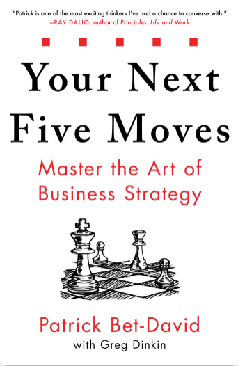
From the creator of Valuetainment, the #1 YouTube channel for entrepreneurs, comes a practical and effective guide for thinking more clearly and achieving your most audacious business goals. Both successful entrepreneurs and chess grandmasters have the vision to look at the pieces in front of them and anticipate their next five moves. In this book, Patrick Bet-David translates this skill into a valuable methodology that applies to high performers at all levels of business. Whether you feel like you’ve hit a wall, lost your fire, or are looking for innovative strategies to take your business to the next level, Your Next Five Moves has the answers. You will gain: CLARITY on what you want and who you want to be. STRATEGY to help you reason in the war room and the board room. GROWTH TACTICS for good times and bad. SKILLS for building the right team based on strong values. INSIGHT on power plays and the art of applying leverage. Combining these principles and revelations drawn from Patrick’s own rise to successful CEO, Your Next Five Moves is a must read for any serious executive, strategist or entrepreneur.
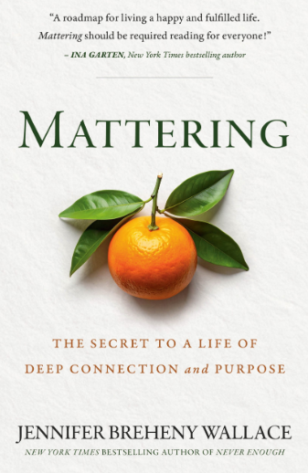
From award-winning journalist and bestselling author Jennifer Wallace comes Mattering–a landmark book that introduces a transformative new framework to confront the loneliness, burnout, and lack of purpose so many of us face today.In this groundbreaking work, Wallace makes an urgent mattering–the feeling that we are valued and have an opportunity to add value–is a core human need, as essential to our well-being as food and water. And yet, in today’s world, that fundamental need is going unmet, with perilous consequences. As mental and social health crises surge, we often blame social media, the pace of modern life, and polarizing politics. But beneath these issues lies a deeper crisis, what Wallace calls “an erosion of mattering.” With her signature warmth and insight, Wallace weaves together research and deeply moving stories of mattering lost and regained. From burned-out employees to overwhelmed caregivers to people grappling with grief or struggling through a destabilizing transition, Mattering explores how our lives are transformed when we are reminded, in small and intentional ways, that we are valued and that we have value to offer. Wallace provides the essential elements to building what she calls our “mattering core”: recognizing your impact, being relied on (but not too much), feeling prioritized, and being truly known and invested in. Strengthening this core helps us reconnect to our sense of purpose, deepen our relationships, and navigate life’s uncertainties and challenges with greater resilience. For readers of Brene Brown, David Brooks, and Adam Grant, Mattering is a rare, culture-shifting book that offers both a diagnosis and a remedy. With a clear road map and actionable takeaways, Wallace reveals how to unlock this powerful force within ourselves and how to build cultures of mattering in our homes, workplaces, and communities. Mattering is both a call to action and a blueprint for living a meaningful life and creating a world we so urgently need.
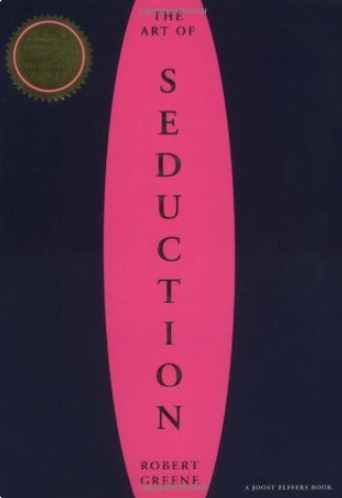
The season’s most talked-about all-purpose personal strategy guide and philosophical compendium, and ” said Newsweek of Robert Greene’s bold, elegant, and ingenious manual of modern manipulation, The 48 Laws of Power. Now Greene has once again mined history and literature to distill the essence of seduction, the most highly refined mode of influence, the ultimate power trip. The Art of Seduction is a masterful synthesis of the work of thinkers such as Freud, Ovid, Kierkegaard, and Einstein, as well as the achievements of the greatest seducers throughout history. From Cleopatra to John F. Kennedy, from Andy Warhol to Josephine Bonaparte, The Art of Seduction gets to the heart of the character of the seducer and his or her tactics, triumphs and failures. The seducer’s many faces include: the Siren, the Rake, the Ideal Lover, the Dandy, the Natural, the Coquette, the Charmer, and the Charismatic. Twenty-four maneuvers will guide readers through the seduction process, providing cunning, amoral instructions for and analysis of this fascinating, all-pervasive form of power. Just as beautifully packaged and every bit as essential as The 48 Laws of Power, The Art of Seduction is an indispensable primer of persuasion and offers the best lessons on how to take what you want from whomever you want or how to prevent yourself from being taken.
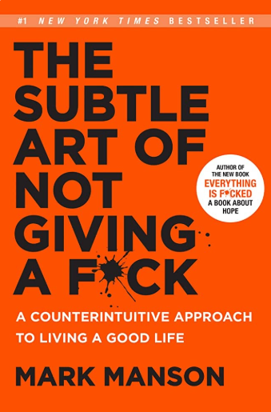
New York Times BestsellerIn this generation-defining self-help guide, a superstar blogger cuts through the crap to show us how to stop trying to be and “positive and ” all the time so that we can truly become better, happier people.For decades, we’ve been told that positive thinking is the key to a happy, rich life. and “F**k positivity, and ” Mark Manson says. and “Let’s be honest, shit is f**ked and we have to live with it. and ” In his wildly popular Internet blog, Manson doesn’t sugarcoat or equivocate. He tells it like it is–a dose of raw, refreshing, honest truth that is sorely lacking today. The Subtle Art of Not Giving a F**k is his antidote to the coddling, let’s-all-feel-good mindset that has infected modern society and spoiled a generation, rewarding them with gold medals just for showing up.Manson makes the argument, backed both by academic research and well-timed poop jokes, that improving our lives hinges not on our ability to turn lemons into lemonade, but on learning to stomach lemons better. Human beings are flawed and limited– and “not everybody can be extraordinary, there are winners and losers in society, and some of it is not fair or your fault. and ” Manson advises us to get to know our limitations and accept them. Once we embrace our fears, faults, and uncertainties, once we stop running and avoiding and start confronting painful truths, we can begin to find the courage, perseverance, honesty, responsibility, curiosity, and forgiveness we seek.There are only so many things we can give a f**k about so we need to figure out which ones really matter, Manson makes clear. While money is nice, caring about what you do with your life is better, because true wealth is about experience. A much-needed grab-you-by-the-shoulders-and-look-you-in-the-eye moment of real-talk, filled with entertaining stories and profane, ruthless humor, The Subtle Art of Not Giving a F**k is a refreshing slap for a generation to help them lead contented, grounded lives.
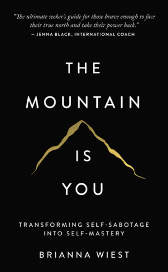
This book is about self-sabotage. Why we do it, when we do it, and how to stop doing it—for good. Coexisting but conflicting needs create self-sabotaging behaviors. This is why we resist efforts to change, often until they feel completely futile. But by extracting crucial insight from our most damaging habits, building emotional intelligence by better understanding our brains and bodies, releasing past experiences at a cellular level, and learning to act as our highest potential future selves, we can step out of our own way and into our potential. For centuries, the mountain has been used as a metaphor for the big challenges we face, especially ones that seem impossible to overcome. To scale our mountains, we actually have to do the deep internal work of excavating trauma, building resilience, and adjusting how we show up for the climb. In the end, it is not the mountain we master, but ourselves.
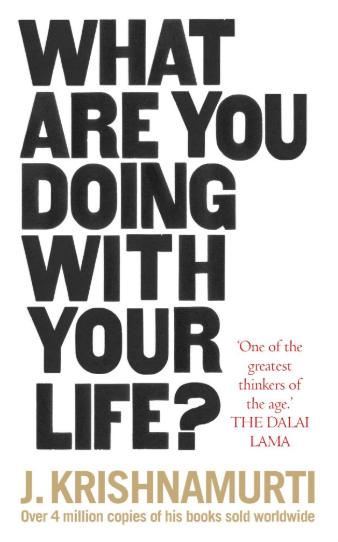
What are you? Who are you? What do you want from life? Life hurts us all, but rarely are we taught how to deal with these shocks. Jiddu Krishnamurti offers an introduction to many of life’s themes from relationships and love, to fear and loneliness. He asks questions such as ‘What is the significance of life?’ and ‘What is the purpose of life?’ He argues that we ask these questions when there is chaos and uncertainty within. And ultimately it is our responsibility to the choices we make and how we choose to live our lives.
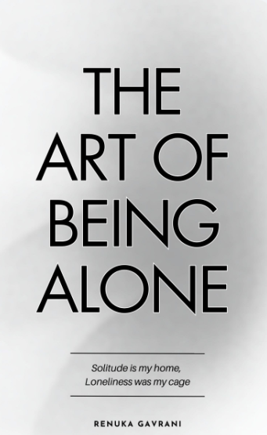
Taylor Swift said once , “The scary news is, you are on your own now. But the cool news is, you are on your own now”The fear of loneliness was injected into our minds since we were kids. We have learned that the kid who eats, sits, and has no friends is pathetic. In every book or movie, the kid who eats alone and has no friends is always featured as a weak character who needs to be saved. Pick any book or movie, and you will observe a common pattern around loneliness. These people were shown as easy targets or an object of your sympathy.No one wants to be seen as a ‘weirdo’ hence, our dread of being alone. We don’t want people to think of us as someone who needs to be saved or mocked. Someone who is unwanted or doesn’t fit in with the cool kids. We don’t want people to think that no one chose us. So what do we do? We start becoming like an ideal version of whom everyone loves. And in the race of achieving people’s acceptance and love, you end up losing yourself.The Art of Being Alone is not just another book. It’s a story of my life. I have been alone for the majority of my life. And I still am. The only difference is, earlier I used to wish for the kind of best friend who will save me and now I enjoy every day with myself, doing things that I always wanted to and using my ‘alone time’ to GROW MYSELF and build my dream life.And through my book, I want to take you on the journey of being cool with being alone. I have spent most of my life wishing for people to stay or have fun with me while ignoring my soul waiting for me to pay attention to myself. I know it’s tough to be lonely. But I promise, it’s fun to be alone. And it’s even more amazing when you use your alone time to build your dream life, achieve your goals, and fall in love with yourself.We fear loneliness because we have been manipulated into believing that loneliness is a curse. And in the hope of finding people, we often end up losing ourselves and doing things that we hated in the first place. Why? Why do you hate the idea of being with yourself so much that you are ready to settle for the bare minimum?But enough is enough. I have divided this book into two sections. The first section is about transforming loneliness into solitude. And the second section is about how you can use your solitude to turn into your growth period. If you are ready to transform your perception around loneliness and if you are all set to achieve your goals using your ‘alone time’ then welcome to ‘The Art of Being Alone”The Art of Being Alone’ is for every person who wants to learn how to use your alone time in a way that you fall in love with your current life while also feeling excited to work toward your dream life. If you are still victimizing your character because you were left behind, it’s time to turn the table around and build the life you always wished for.